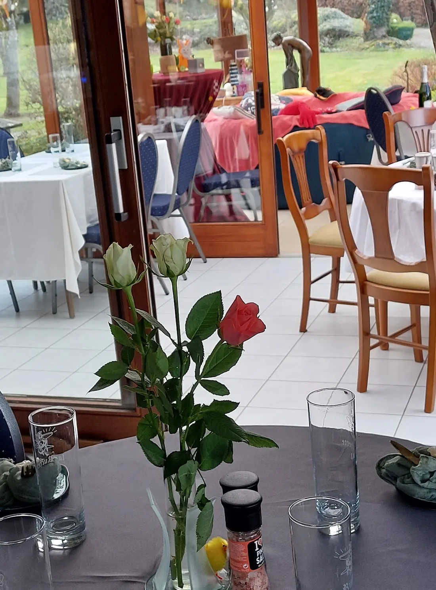
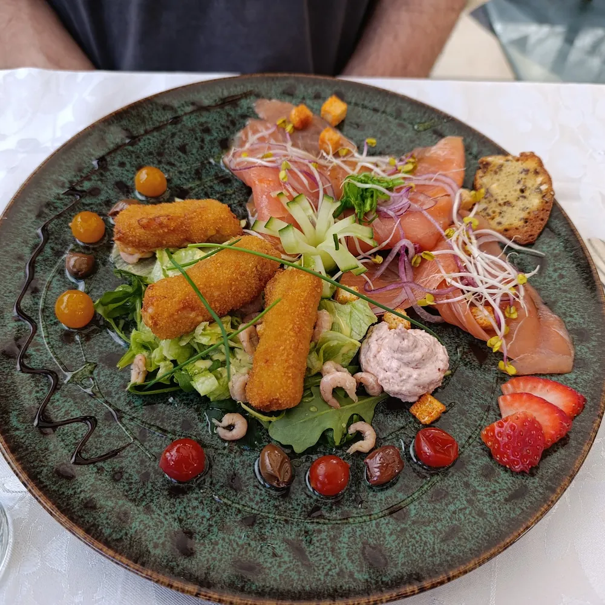
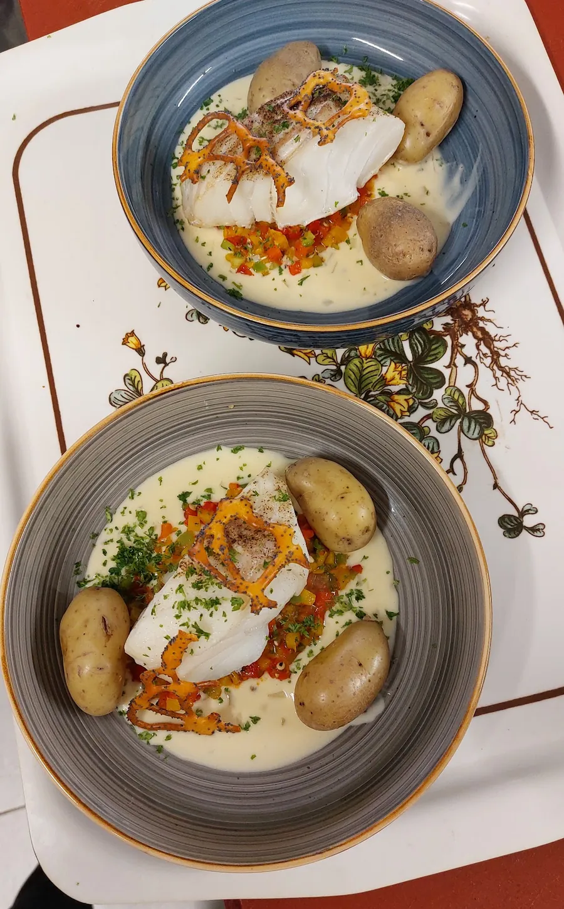
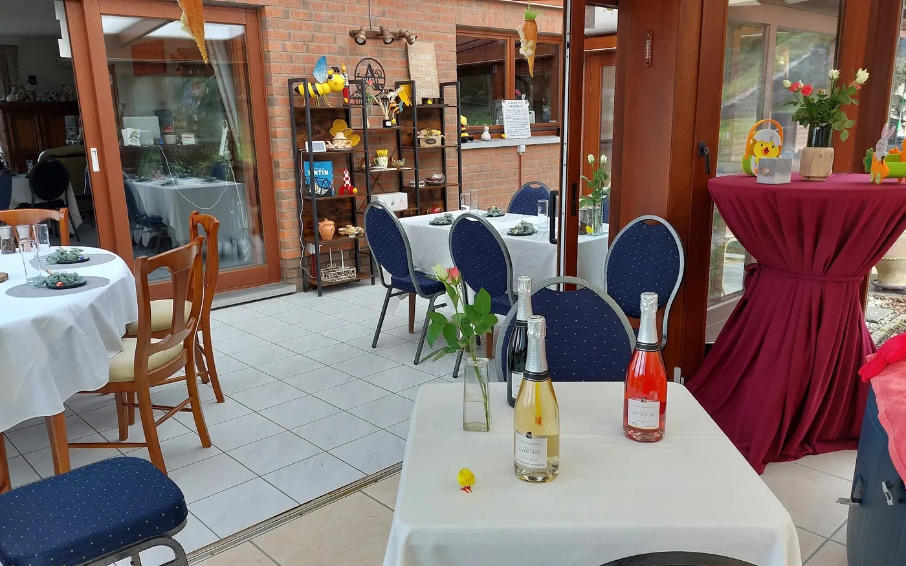
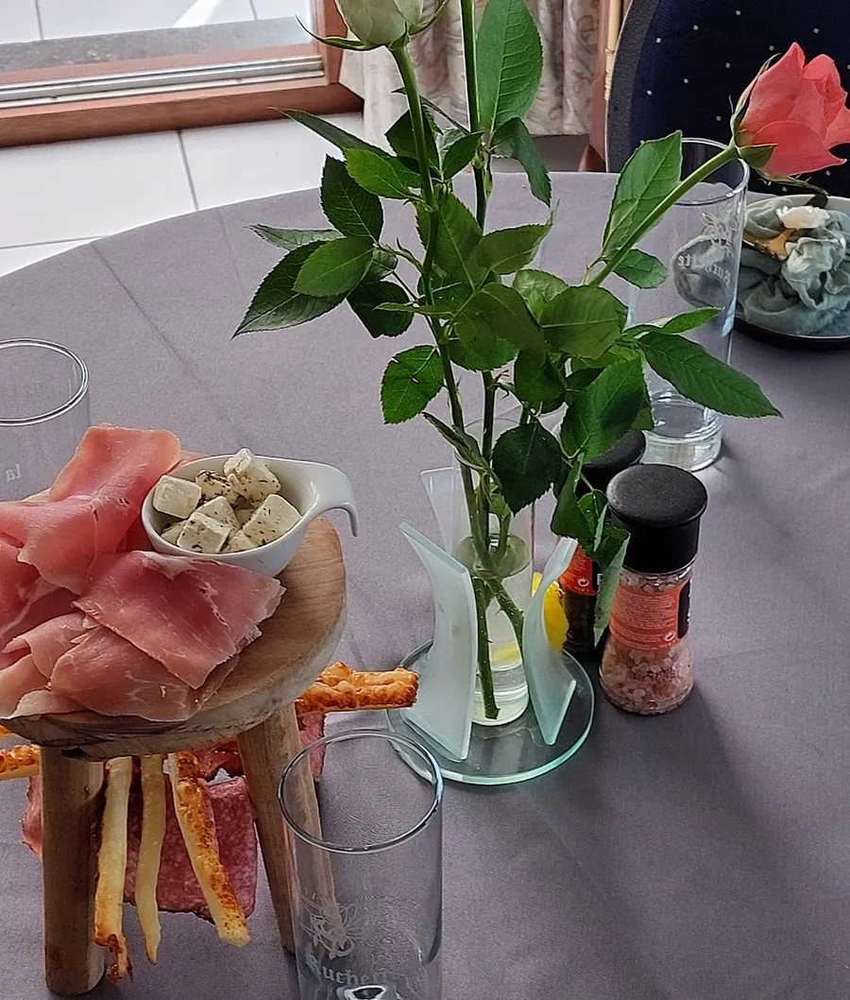
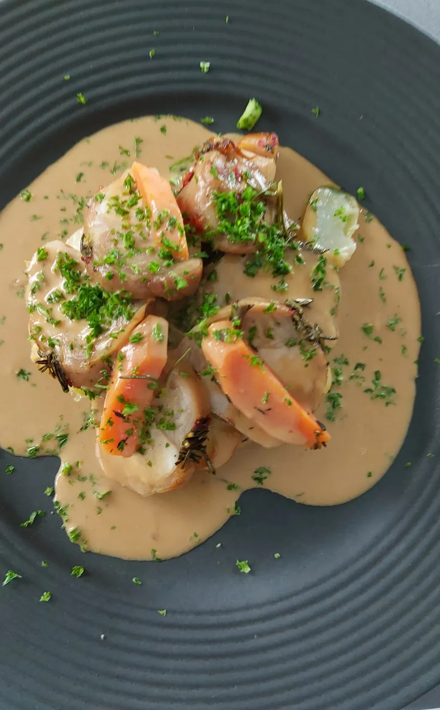
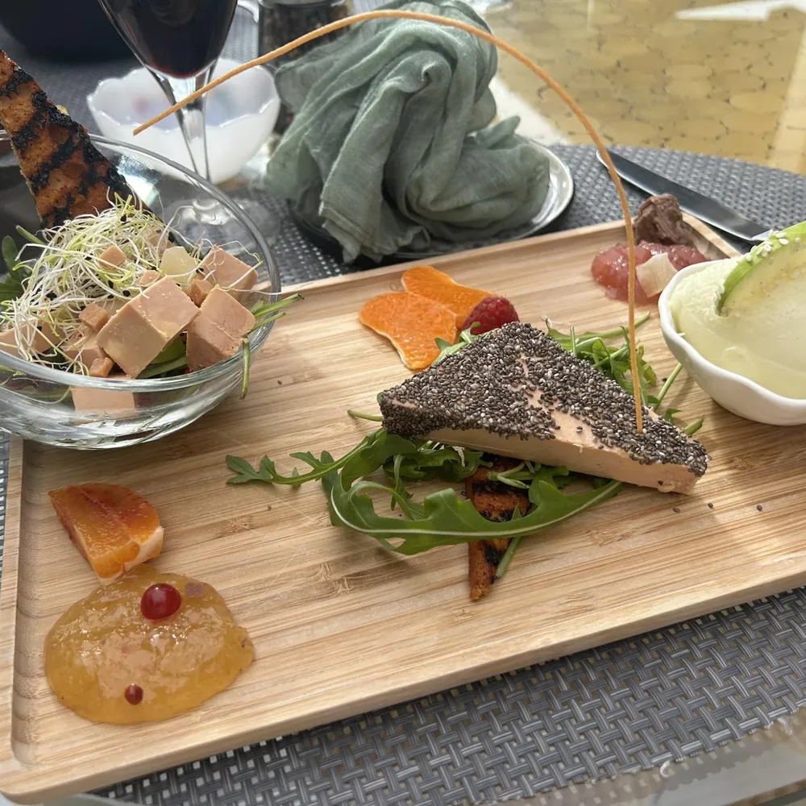
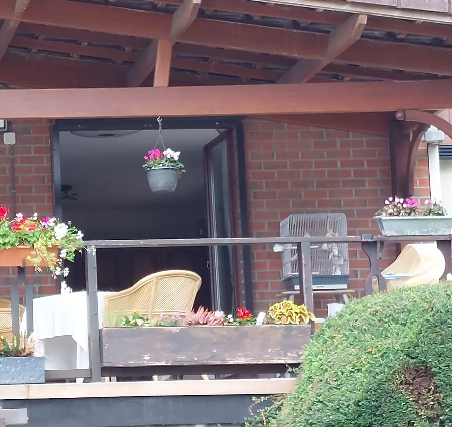
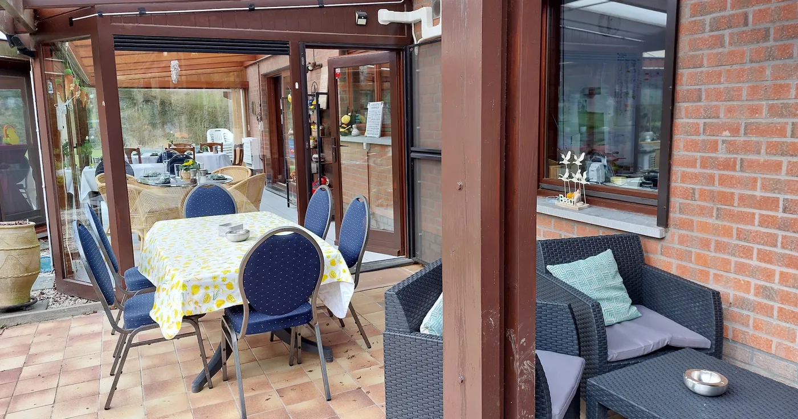
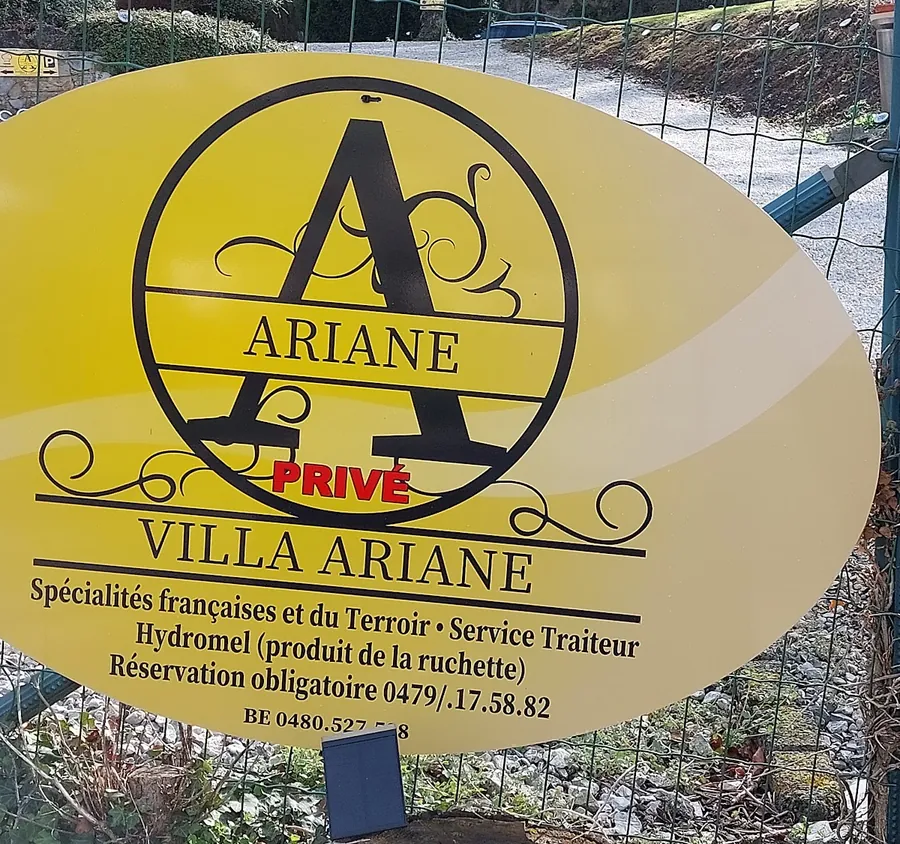

Restaurant chez l'habitant · Silenrieux
Bienvenue àLa VillaAriane
Spécialités françaises et du terroir, grillade à table et fondues, servies dans la maison de Philippe et Ariane, près des lacs de l'Eau d'Heure.
Vendredi soir, samedi et dimanche
4,912 avis Google


Sur réservationVendredi soir · samedi · dimanche midi
- Chez l'habitantLe restaurant fait partie de la maison : véranda sur le jardin et terrasse.
- Grillade à table et fonduesCharbo'chette, Bacchus de bœuf ou fondue bourguignonne, dès 2 couverts.
- L'hydromel de la ruchetteProduit de la ruchette maison, jusque dans le bouillon du Bacchus.


On dîne chez Philippe et Ariane
À la Villa Ariane, pas de grande salle : le restaurant fait partie de la maison. On s'installe sous la véranda, ouverte sur le jardin, ou en terrasse quand le temps le permet, et le chef et son épouse vous reçoivent comme à la maison.
Une cuisine française et du terroir, une carte qui change avec les saisons, et des petites attentions que leurs clients racontent volontiers :
Des petits mets avant de commencer le repas
Céline B., avis Googleune boule de sorbet en trou normand
Aline L., avis Googleun Hydromel maison excellent
Aline L., avis Google
Dans l'assiette
Poissons, gibier d'automne, planches à partager : des assiettes soignées, servies dans la véranda.




Réserver votre table
La Villa Ariane reçoit uniquement sur réservation, c'est écrit sur l'enseigne. Le jour, l'heure, le nombre de couverts : trente secondes.
Vendredi soir, samedi midi et soir, dimanche midiGrillade à table et fondues : 2 couverts minimum
« Comme chez soi »
Horaires
| lundi | fermé |
|---|---|
| mardi | fermé |
| mercredi | fermé |
| jeudi | fermé |
| vendredi | 18 h – 22 h |
| samedi | 12 h – 22 h |
| dimanche | 12 h – 18 h |
Sur réservation uniquement · au 0479 17 58 82
Service traiteur · renseignements par téléphone

Repère : l'enseigne jauneLe restaurant est une maison privée : cherchez le panneau jaune au portail.